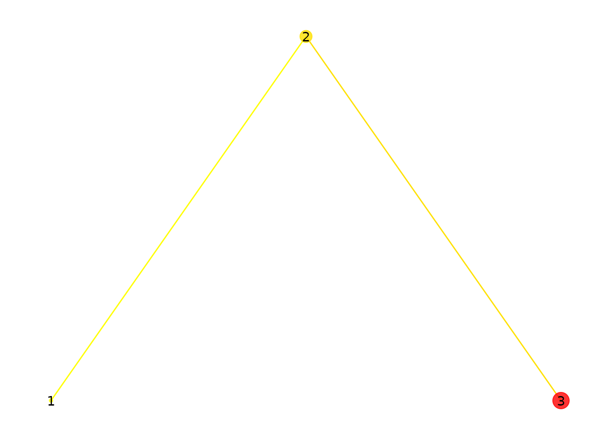
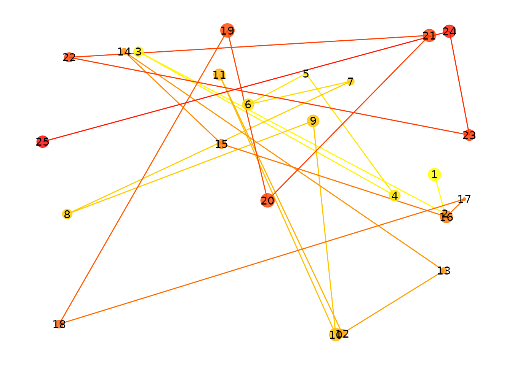
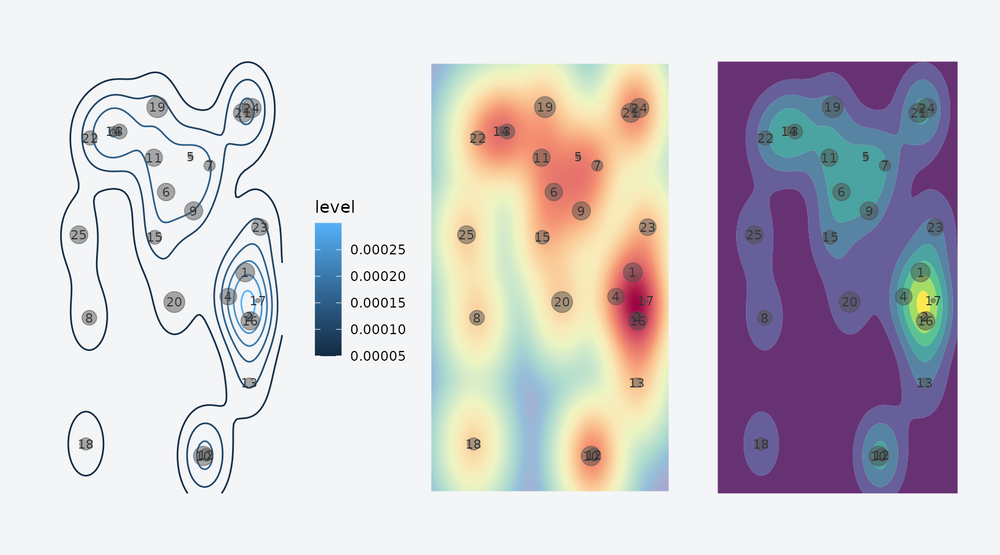
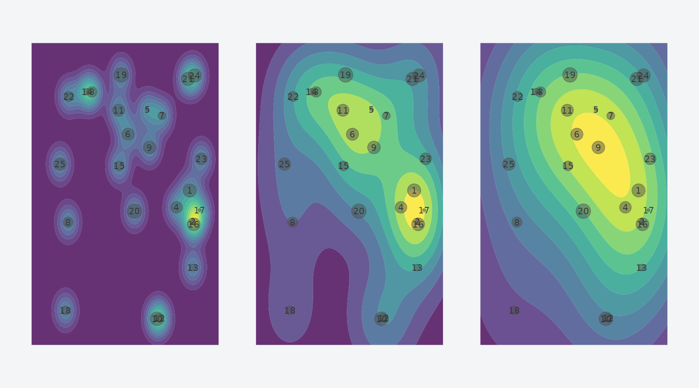
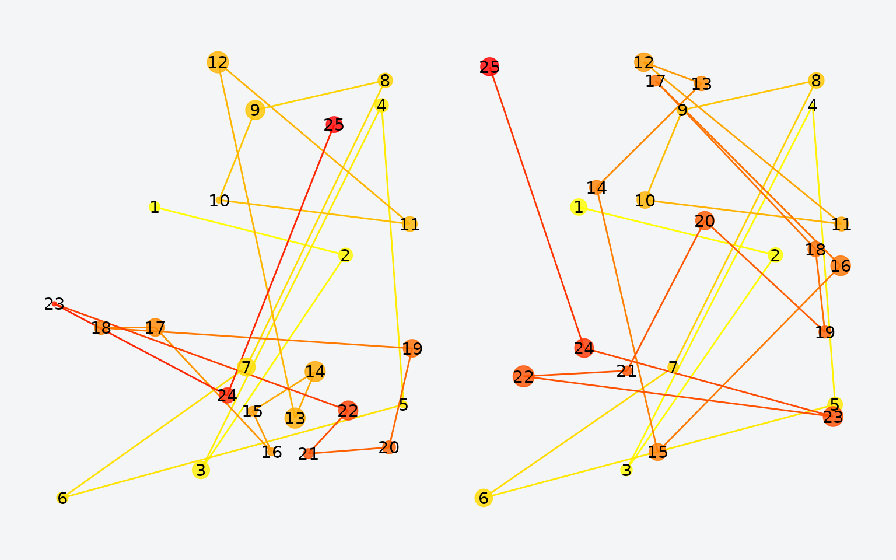
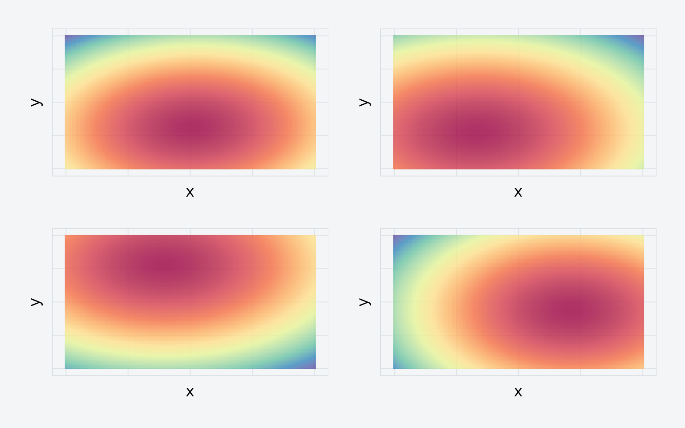
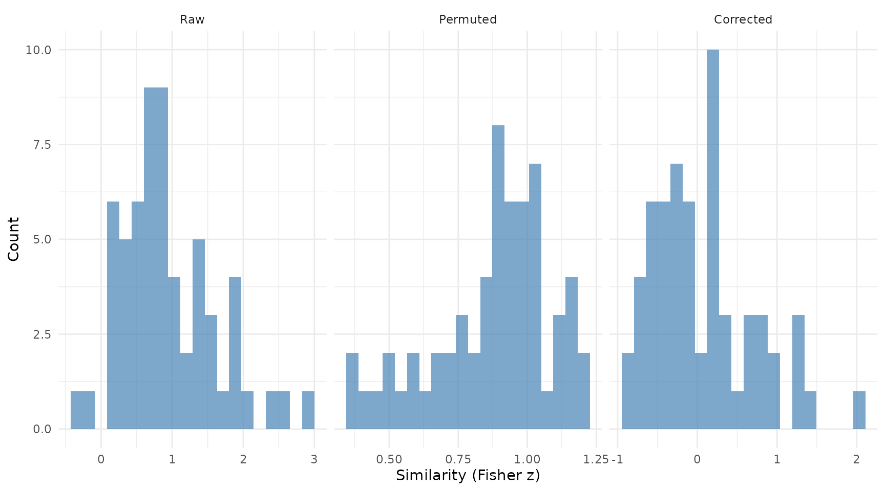
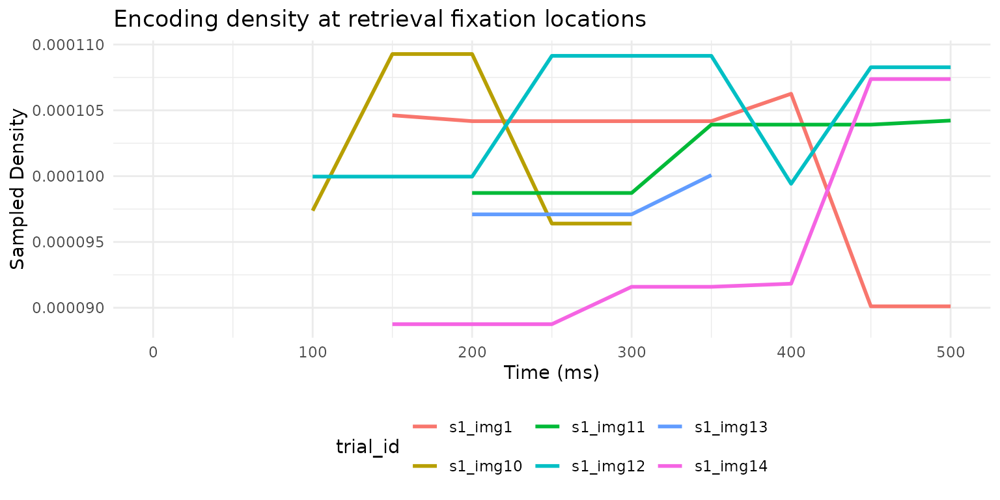

Comparing Eye-Movement Patterns
eyesim.RmdWhen you study an image, you move your eyes to different locations in
a particular sequence. If you later see that same image during a memory
test, do you look at the same places? This kind of “eye-movement
reinstatement” is a powerful marker of memory, and eyesim
gives you the tools to measure it.
This vignette walks you through the core workflow: representing fixations, computing density maps, and measuring similarity between fixation patterns across experimental conditions.
How do you represent fixations?
A fixation_group holds a set of eye fixations — each
defined by an x/y screen position, an onset time (when the fixation
began), and a duration (how long the eye stayed there). You can create
one directly:
fg <- fixation_group(
x = c(-100, 0, 100),
y = c(0, 100, 0),
onset = c(0, 10, 60),
duration = c(10, 50, 100)
)
Three fixations. Point size reflects duration; color reflects onset time (yellow = early, red = late).
Point size shows how long each fixation lasted. Color indicates when it occurred: yellow for early fixations, red for later ones.
Here is a more realistic group with 25 randomly placed fixations:
set.seed(42)
fg <- fixation_group(
x = runif(25, 0, 100),
y = runif(25, 0, 100),
onset = cumsum(runif(25, 0, 100)),
duration = runif(25, 50, 300)
)
25 randomly placed fixations.
How do you visualize fixation density?
Individual points can be hard to interpret. Density maps show you
where fixations cluster. The plot() method supports several
display styles:
p1 <- plot(fg, typ = "contour", xlim = c(-10, 110), ylim = c(-10, 110), bandwidth = 35)
p2 <- plot(fg, typ = "raster", xlim = c(-10, 110), ylim = c(-10, 110), bandwidth = 35)
p3 <- plot(fg, typ = "filled_contour", xlim = c(-10, 110), ylim = c(-10, 110), bandwidth = 35)
p1 + p2 + p3
Three density visualizations: contour, raster, and filled contour.
The bandwidth parameter controls the smoothing level.
Higher values blur out fine detail and emphasize broad patterns:
p1 <- plot(fg, typ = "filled_contour", xlim = c(-10, 110), ylim = c(-10, 110), bandwidth = 20)
p2 <- plot(fg, typ = "filled_contour", xlim = c(-10, 110), ylim = c(-10, 110), bandwidth = 60)
p3 <- plot(fg, typ = "filled_contour", xlim = c(-10, 110), ylim = c(-10, 110), bandwidth = 100)
p1 + p2 + p3
Effect of bandwidth: narrow (20), medium (60), and wide (100).
How do you compare two fixation patterns?
To quantify how similar two fixation patterns are, convert them to
eye_density maps and call similarity(). Here
we create two patterns that share roughly half their fixation
locations:
set.seed(123)
x_shared <- runif(12, 0, 100)
y_shared <- runif(12, 0, 100)
fg1 <- fixation_group(
x = c(x_shared, runif(13, 0, 100)),
y = c(y_shared, runif(13, 0, 100)),
onset = cumsum(runif(25, 0, 100)),
duration = runif(25, 50, 300)
)
fg2 <- fixation_group(
x = c(x_shared, runif(13, 0, 100)),
y = c(y_shared, runif(13, 0, 100)),
onset = cumsum(runif(25, 0, 100)),
duration = runif(25, 50, 300)
)
Two fixation patterns sharing roughly half their locations.
Now convert to density maps and compute their similarity:
ed1 <- eye_density(fg1, sigma = 50, xbounds = c(0, 100), ybounds = c(0, 100))
ed2 <- eye_density(fg2, sigma = 50, xbounds = c(0, 100), ybounds = c(0, 100))
similarity(ed1, ed2)
#> [1] 0.7760392The default metric is the Pearson correlation. Several alternatives are available:
methods <- c("pearson", "spearman", "fisherz", "cosine", "l1", "jaccard", "dcov")
results <- sapply(methods, function(m) similarity(ed1, ed2, method = m))
data.frame(method = methods, similarity = round(unlist(results), 4))
#> method similarity
#> pearson pearson 0.7760
#> spearman spearman 0.7714
#> fisherz fisherz 1.0353
#> cosine cosine 0.9934
#> l1 l1 0.9484
#> jaccard jaccard 0.9869
#> dcov dcov 0.7293How do you analyze a full experiment?
In a typical memory study, participants view images during encoding and again during retrieval. You want to compare fixation patterns between these phases for the same image and control for non-specific similarity.
Let’s simulate a small experiment: 3 participants, 20 images, encoding + retrieval.
head(df)
#> x y onset duration image phase participant
#> 1 11.37817 50.54517 62.07862 197.0510 img1 encoding s1
#> 2 68.42647 19.38365 235.32139 204.0351 img1 encoding s1
#> 3 99.25088 63.69041 373.98848 263.6462 img1 encoding s1
#> 4 53.49936 68.78001 539.99684 112.1470 img1 encoding s1
#> 5 96.66141 64.01908 642.50973 233.1542 img1 encoding s1
#> 6 67.14276 35.78854 693.41893 307.2941 img1 encoding s1
cat("Rows:", nrow(df),
" | Participants:", length(unique(df$participant)),
" | Images:", length(unique(df$image)))
#> Rows: 783 | Participants: 3 | Images: 20Wrap the raw data in an eye_table, which groups
fixations by the variables that define your experimental design:
eyetab <- eye_table("x", "y", "duration", "onset",
groupvar = c("participant", "phase", "image"),
data = df)
eyetab
#> Eye table: 120 groups, 783 total fixations
#> origin: (640, 640)
#> # A tibble: 120 × 4
#> participant phase image fixgroup
#> <chr> <chr> <chr> <list>
#> 1 s1 encoding img1 <fxtn_grp [10 × 6]>
#> 2 s1 encoding img10 <fxtn_grp [4 × 6]>
#> 3 s1 encoding img11 <fxtn_grp [3 × 6]>
#> 4 s1 encoding img12 <fxtn_grp [10 × 6]>
#> 5 s1 encoding img13 <fxtn_grp [10 × 6]>
#> 6 s1 encoding img14 <fxtn_grp [4 × 6]>
#> 7 s1 encoding img15 <fxtn_grp [10 × 6]>
#> 8 s1 encoding img16 <fxtn_grp [7 × 6]>
#> 9 s1 encoding img17 <fxtn_grp [3 × 6]>
#> 10 s1 encoding img18 <fxtn_grp [4 × 6]>
#> # ℹ 110 more rowsComputing density maps by group
density_by() computes a density map for every
combination of your grouping variables:
eyedens <- density_by(eyetab,
groups = c("phase", "image", "participant"),
sigma = 100,
xbounds = c(0, 100), ybounds = c(0, 100))
Four density maps from the simulated experiment.
eyedens
#> # A tibble: 120 × 5
#> phase image participant fixgroup density
#> <chr> <chr> <chr> <list> <list>
#> 1 encoding img1 s1 <fxtn_grp [10 × 6]> <ey_dnsty [5]>
#> 2 encoding img1 s2 <fxtn_grp [8 × 6]> <ey_dnsty [5]>
#> 3 encoding img1 s3 <fxtn_grp [8 × 6]> <ey_dnsty [5]>
#> 4 encoding img10 s1 <fxtn_grp [4 × 6]> <ey_dnsty [5]>
#> 5 encoding img10 s2 <fxtn_grp [4 × 6]> <ey_dnsty [5]>
#> 6 encoding img10 s3 <fxtn_grp [8 × 6]> <ey_dnsty [5]>
#> 7 encoding img11 s1 <fxtn_grp [3 × 6]> <ey_dnsty [5]>
#> 8 encoding img11 s2 <fxtn_grp [3 × 6]> <ey_dnsty [5]>
#> 9 encoding img11 s3 <fxtn_grp [9 × 6]> <ey_dnsty [5]>
#> 10 encoding img12 s1 <fxtn_grp [10 × 6]> <ey_dnsty [5]>
#> # ℹ 110 more rowsTemplate similarity analysis
template_similarity() compares each retrieval density
map to its matched encoding density map. It estimates a baseline by
permuting image labels and reports the corrected difference:
set.seed(1234)
enc_dens <- eyedens %>% filter(phase == "encoding")
ret_dens <- eyedens %>% filter(phase == "retrieval")
simres <- template_similarity(enc_dens, ret_dens,
match_on = "image",
method = "fisherz",
permutations = 50)The result includes three key columns:
-
eye_sim— raw similarity between matched pairs -
perm_sim— average similarity across non-matching pairs (baseline) -
eye_sim_diff— the corrected score (raw minus baseline)
Since our data is random, there should be no true reinstatement:
t.test(simres$eye_sim_diff)
#>
#> One Sample t-test
#>
#> data: simres$eye_sim_diff
#> t = 0.78502, df = 59, p-value = 0.4356
#> alternative hypothesis: true mean is not equal to 0
#> 95 percent confidence interval:
#> -0.1021582 0.2340630
#> sample estimates:
#> mean of x
#> 0.06595242
Distribution of raw, permuted, and corrected similarity scores.
As expected, the corrected similarity is centered near zero.
A note on units. With
method = "fisherz", all similarity values are Fisher z
scores (atanh of Pearson r). Convert back to correlations with
tanh() if desired. With method = "pearson" or
"spearman", values are correlations directly.
A note on permutations. The
permutations argument is an upper bound. If fewer
non-matching candidates are available, eyesim uses all of
them exhaustively.
What about multiscale analysis?
Choosing a single bandwidth is somewhat arbitrary. You can compute density at multiple scales by passing a vector of sigma values:
eyedens_multi <- density_by(eyetab,
groups = c("phase", "image", "participant"),
sigma = c(25, 50, 100),
xbounds = c(0, 100), ybounds = c(0, 100))
enc_multi <- eyedens_multi %>% filter(phase == "encoding")
ret_multi <- eyedens_multi %>% filter(phase == "retrieval")
simres_multi <- template_similarity(enc_multi, ret_multi,
match_on = "image",
method = "fisherz",
permutations = 50)
cat("Single-scale mean:", round(mean(simres$eye_sim_diff), 4), "\n")
#> Single-scale mean: 0.066
cat("Multiscale mean: ", round(mean(simres_multi$eye_sim_diff), 4), "\n")
#> Multiscale mean: 0.0342Multiscale analysis provides a more robust similarity estimate by averaging across spatial resolutions.
How does similarity evolve over time?
Sometimes you want to know when during retrieval
participants look at previously-fixated locations.
sample_density_time() samples the encoding density at
retrieval fixation locations at each time point:
ret_eyetab <- eyetab %>% filter(phase == "retrieval")
enc_dens <- enc_dens %>%
mutate(match_key = paste(participant, image, sep = "_"))
ret_matched <- ret_eyetab %>%
mutate(match_key = paste(participant, image, sep = "_"))
temporal <- sample_density_time(
template_tab = enc_dens,
source_tab = ret_matched,
match_on = "match_key",
times = seq(0, 500, by = 50),
time_bins = c(0, 250, 500),
permutations = 10,
permute_on = "participant"
)
temporal %>%
select(participant, image, bin_1, bin_2,
perm_bin_1, perm_bin_2, diff_bin_1, diff_bin_2) %>%
head()
#> # A tibble: 6 × 8
#> participant image bin_1 bin_2 perm_bin_1 perm_bin_2 diff_bin_1 diff_bin_2
#> <chr> <chr> <dbl> <dbl> <dbl> <dbl> <dbl> <dbl>
#> 1 s1 img1 1.04 e-4 9.98e-5 0.0000966 0.0000993 7.85e-6 5.81e-7
#> 2 s1 img10 1.05 e-4 9.64e-5 0.000102 0.000104 2.83e-6 -7.41e-6
#> 3 s1 img11 9.87 e-5 1.02e-4 0.000101 0.000104 -2.43e-6 -1.87e-6
#> 4 s1 img12 1.000e-4 1.07e-4 0.0000935 0.000106 6.45e-6 1.50e-6
#> 5 s1 img13 9.71 e-5 9.81e-5 0.0000994 0.0000996 -2.28e-6 -1.51e-6
#> 6 s1 img14 8.88 e-5 9.64e-5 0.0000979 0.0000991 -9.11e-6 -2.67e-6
Encoding density sampled at retrieval fixation locations over time, for six example trials.
This reveals when during retrieval participants fixate locations that mattered during encoding — a window into the time course of memory-guided attention.
What’s next?
-
vignette("Multimatch")— compare scanpath structure across five dimensions -
vignette("RepetitiveSimilarity")— analyze repeated viewing of the same stimulus -
vignette("latent-transforms")— domain adaptation for cross-device or cross-participant comparisons - The package ships real data:
data(wynn_study)anddata(wynn_test)from a recognition memory experiment